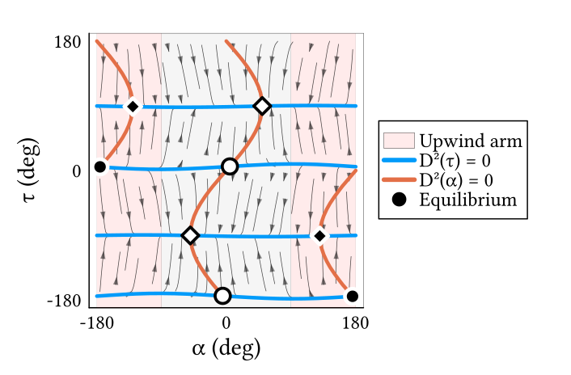
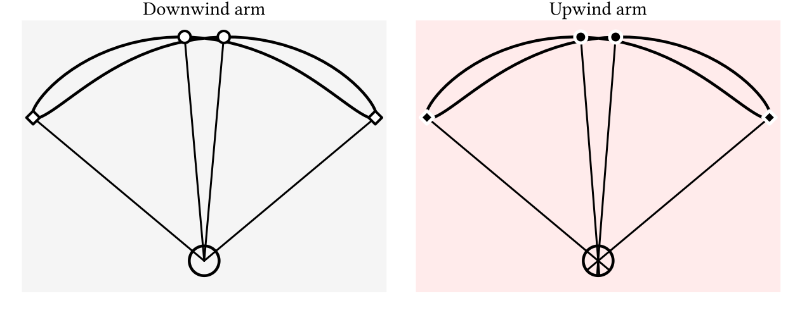
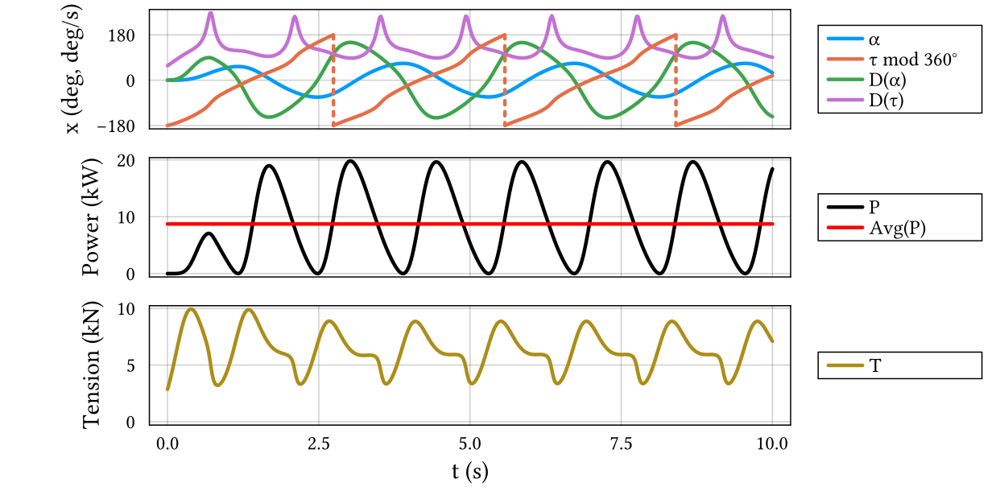
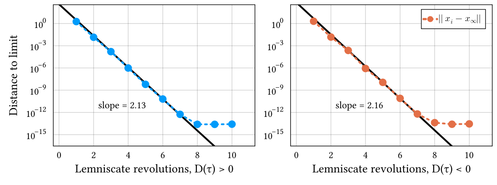
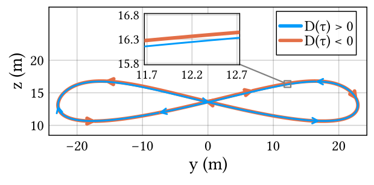

3 Analysis of the dynamics: equilibria and periodic orbits
This section describes the dynamics of the four-dimensional system \(\dot{\vb x} = f(\vb x)\) of Section 1.4 for one set of parameters, the one of Table 1. The inertia of the arm is \(I = 1300\,\mathrm{kg}\,\mathrm{m}^{2}\), the initial guess of the optimization of Section 4: the results of this section describe the device before optimization, which the optimized design of Section 4 is compared with. At this inertia, the braking coefficient \(b\) satisfies the condition (47), \(b = I\omega\), that maximizes the average power (41) of the one-dimensional model at fixed \(I\), where \(\omega = 2\pi/T\) is now the angular frequency of the limit cycle of the full system with \(\dot\tau > 0\) (see Section 3.2) rather than the estimate (45). As the period \(T\) depends on \(b\), this condition is a fixed-point equation, solved by iterating \(b \leftarrow 2\pi I/T(b)\). All the trajectories are integrated with the order-9 Verner method (Verner 2010), as implemented in DifferentialEquations.jl (Rackauckas and Nie 2017), with absolute and relative tolerances \(10^{-9}\) unless specified otherwise.
3.1 Equilibria
The equilibria, or steady states, of the system are the states \(\vb x_0 = (\vb q_0, 0)\) with zero velocity and zero acceleration, that is the solutions of \begin{equation} \tag{52} \ddot{\vb q}(\vb q_0, \dot{\vb q}= 0) = 0 \in \mathbf{R}^2. \end{equation} At such a state, the arm is at rest and the generator exerts no torque, so that (31) reduces to \(a\lambda F_\ell = 0\): either the lines are slack, or the lever arm (28) of the tension vanishes. In the latter case, the kite lies on one of the edges \(\Gamma_\pm\) of the band of reachable positions, the fold curves \(\alpha = \phi(\tau)\) (arm pointing towards the kite, downwind arm) and \(\alpha = \phi(\tau) + \pi\) (arm pointing away from the kite, upwind arm) of Section 1.1. The arm and the lines are then in the same vertical plane. Slack lines are excluded: off the fold curves, \(F_\ell = 0\) at rest requires, by (115)–(116), that the force \(\vb F_a + \vb F_g\) on the kite be normal to the cone, whereas on a grid of \(721\times721\) configurations its tangential part is at least \(0.56\) times its norm. The equilibria therefore lie on the fold curves, which are nullclines of \(\ddot\alpha\) at zero velocity, since \(\lambda = 0\) there. Along each fold curve, the equilibria are the zeros of the single function \(g_\pm(\tau) = \ddot\tau(\vb q(\tau), 0)\), with \(\vb q(\tau) = (\phi(\tau), \tau)\) or \((\phi(\tau)+\pi, \tau)\); by (115)–(116) with \(\lambda = 0\), they are the configurations where the weight and the aerodynamic force are balanced by the tension of the lines and the reaction of the cone. They are bracketed by the sign changes of \(g_\pm\) on a grid of \(3600\) values of \(\tau\), and refined by a scalar root finder; the same \(8\) equilibria are found by a nonlinear solver on the full system (52) started from \(100\) values of \(\tau\) on each fold curve and completed by symmetry. Their tensions, given by (32), lie between 144 N and 266 N.
The solutions of (52) lie at the intersections of the nullclines of \(\ddot\alpha\) and of \(\ddot\tau\), shown in Fig. 5: the nullclines of \(\ddot\tau\) cross the torus \(\mathbf{T}^2\) of configurations horizontally, those of \(\ddot\alpha\) vertically, and they meet at \(8\) points. The symmetry (34) maps an equilibrium \((\alpha, \tau)\) onto the equilibrium \((-\alpha, \tau + \pi)\), with the kite on the other side of the plane of the wind, so that the equilibria come in \(8/2\) pairs. They realize the eight combinations of three binary features: the arm points downwind or upwind; the kite is near the centre of the eight or near one of its tips; it is on the left or on the right of the plane of the wind. Their configurations are drawn in Fig. 6, and Table 2 gives their positions and the eigenvalues of the Jacobian of \(f\). The two members of a pair have the same spectrum, since \(\sigma\) is linear and conjugates the vector field to itself; as the vector field is analytic, the Jacobians are computed by ad at the equilibria themselves, and the spectra of the two members agree to rounding error.
All the equilibria are unstable. The two pairs with the kite near the centre of the eight have a real eigenvalue between \(11.4\) and 12.9 s, which repels the trajectories on a time scale of a tenth of a second; the two pairs with the kite near a tip have a pair of complex eigenvalues with real part between \(1.49\) and 1.53 s, an unstable oscillation. With an upwind arm, each equilibrium has one more unstable eigenvalue, real and small, than its downwind counterpart. None of the equilibria is a possible operating point of the device, which motivates the study of the periodic motions below. At every equilibrium, the eigenvector of the most unstable eigenvalue moves the kite along the eight, in \(\tau\) and \(\dot\tau\), while the arm stays at rest to first order: the main instability is that of the kite on its prescribed path, not that of the arm. The additional, slow, unstable eigenvalue of the upwind equilibria is, on the contrary, a mode of the arm: the lines pull the tip of an arm pointing upwind, away from the kite, towards the pivot, and a small rotation of the arm is amplified, as for an inverted pendulum, whereas they stabilize an arm pointing downwind, towards the kite. Indeed, with the kite frozen and the tension held at its value at rest, linearizing (31) at the fold curve with (28) gives \(I\,\delta\ddot\alpha + b\,\delta\dot\alpha = k\,\delta\alpha\), with \(k = -a F_\ell\,(r/\ell)\sin\theta\cos(\phi-\alpha)\), positive for an upwind arm (\(\alpha = \phi+\pi\)) and negative for a downwind one (\(\alpha = \phi\)). The largest root of \(I s^2 + b s - k = 0\) is positive in the first case and negative in the second, and it matches the corresponding real eigenvalue of Table 2 within \(9\%\) at the four pairs of equilibria; with the small tension at rest and the large inertia of the arm, this instability is slow. Near the centre of the eight, it is static: the tangential component of the aerodynamic force and of the weight vanishes at the equilibrium, and a small displacement of the kite along the eight creates a tangential component in the direction of the displacement, which amplifies it on a time scale of a tenth of a second. Near a tip, it is an unstable oscillation along the eight: the motion of the kite changes its apparent wind, hence its aerodynamic force, in phase with its velocity, so that the aerodynamic force feeds the motion, as in crosswind flight.
| Arm | Kite | \((\alpha, \tau)\) | Eigenvalues | Unstable |
|---|---|---|---|---|
| downwind | centre | \((5.0, 5.7)\) | \(-2.12,\ -0.34,\ -0.10,\ 11.38\) | 1 |
| downwind | tip | \((50.0, 89.7)\) | \(-2.03,\ -0.19,\ 1.49 \pm 3.17\,i\) | 2 |
| upwind | centre | \((-175.6, 5.1)\) | \(-2.30,\ -0.33,\ 0.09,\ 12.89\) | 2 |
| upwind | tip | \((-130.0, 89.0)\) | \(-2.36,\ 0.14,\ 1.53 \pm 3.42\,i\) | 3 |
Code that produced this table
src/analysis.jl (region table5), see also the full file.
pairs = equilibrium_spectra(ss, vbp; is_down, is_center)
push!(files, write_table("table5", equilibria_table(pairs)))
Code that produced this figure
src/analysis.jl (region setup_analysis), see also the full file.
## Determine optimal parameters using kinetic model
p0 = PMP.build_para()
p0.b = PMP.optimal_torque_slope(p0; sense=(+), tol=1e-9, rtol=1e-9, maxiter=50) # errors if not converged
vbp = PMP.build_vbpara(p0)src/analysis.jl (region equilibria_style), see also the full file.
#! format: off
my_theme = (;
downwind = (; c=plot_color(:grey, 0.08)),
upwind = (; c=plot_color(:red, 0.08)),
streamlines = (; c=:black, alpha=0.7, lw=default(:lw) / 6),
heads = (; c=:black, alpha=0.5, lw=0),
nullcline_tau = (; c=1, ls=:solid),
nullcline_alpha = (; c=2, ls=:solid),
eq_legend = (; c=:black, shape=:circle, ms=default(:ms), msw=20),
)
# Equilibrium characteristics: the symmetry (α, τ) -> (-α, τ+π) flips the kite
# left↔right (φ = φ0 + Δφ·sin(τ)) and preserves the arm wind region and the
# center/side zone, so the 8 equilibria realize all 2×2×2 combinations.
φkite(τ) = vbp.φ0 + vbp.Δφ * sin(τ) # kite azimuth (PM4.τ_to_θφ)
is_down(q) = cos(q[1]) > 0 # arm downwind
is_left(q) = φkite(q[2]) > vbp.φ0 # kite left of window center
is_center(q) = abs(φkite(q[2]) - vbp.φ0) < vbp.Δφ / 2 # closer to φ0 than to ±Δφ
"Marker style from the equilibrium characteristics: fill = arm wind, shape = zone, stroke = kite side."
ss_style(q) = (
c = is_down(q) ? :white : :black,
markerstrokecolor = is_down(q) ? :black : :white,
shape = is_center(q) ? :circle : :diamond,
ms = default(:ms),
markerstrokewidth = is_down(q) ? 8 : 10,
# markerstrokewidth = 10,
)
#! format: on
theme = my_theme
f = q -> SteadyState.ddq_partial(q, vbp)src/analysis.jl (region equilibriaphasespace), see also the full file.
# Canvas & Layout
δ = 0
plot(xlims=(-180 - δ, 180 + δ), ylims=(-180 - δ, 180 + δ), aspect_ratio=:equal,
xticks=([-180, 0, 180], ["-180", "0", "180"]),
yticks=([-180, 0, 180], ["-180", "0", "180"]),
xlabel="α (deg)", ylabel="τ (deg)",
grid=false, framestyle=:semi, legend=:outerright, colorbar=false)
# Background wind spans
vspan!([-180, -90]; theme.upwind..., label="Upwind arm")
vspan!([90, 180]; theme.upwind...)
vspan!([-90, 90]; theme.downwind...) #, label="Downwind arm")
# Streamlines & Arrowheads
line_x, line_y, ax, ay, au, av = streamlines(f, (-π, π), (-π, π))
plot!(rad2deg.(line_x), rad2deg.(line_y); theme.streamlines...)
ax, ay = rad2deg.(ax), rad2deg.(ay)
L, W = rad2deg(0.2), rad2deg(0.06)
heads = [Shape([(s[1] + L / 2 * u, s[2] + L / 2 * v),
(s[1] - L / 2 * u - W * v, s[2] - L / 2 * v + W * u),
(s[1] - L / 2 * u + W * v, s[2] - L / 2 * v - W * u)])
for (s, u, v) in zip(zip(ax, ay), au, av)]
plot!(heads; theme.heads...)
# Nullclines (splatting reuses line properties for both contour and the GR legend fix)
N = 20
αs = range(-π, π, N + 1)
τs = range(-π, π, 2N + 1)
dd = [f((α, τ)) for τ in τs, α in αs]
contour!(rad2deg.(αs), rad2deg.(τs), last.(dd); levels=[0], theme.nullcline_tau...)
contour!(rad2deg.(αs), rad2deg.(τs), first.(dd); levels=[0], theme.nullcline_alpha...)
plot!([NaN], [NaN]; theme.nullcline_tau..., label="D²(τ) = 0")
plot!([NaN], [NaN]; theme.nullcline_alpha..., label="D²(α) = 0")
# Equilibria
ss = SteadyState.all_steady_states(vbp; N=EQ_SEEDS)
styles = ss_style.(ss)
scatter!(rad2deg.(first.(ss)), rad2deg.(last.(ss));
c=getproperty.(styles, :c),
markerstrokecolor=getproperty.(styles, :markerstrokecolor),
shape=getproperty.(styles, :shape),
ms=getproperty.(styles, :ms),
markerstrokewidth=getproperty.(styles, :markerstrokewidth))
scatter!([NaN], [NaN]; theme.eq_legend..., label="Equilibrium")
plot!(widen=1.06)
plot!(leftmargin=6Plots.mm, bottommargin=5Plots.mm, rightmargin=5Plots.mm,
topmargin=5Plots.mm, size=plot_size(1, 1.14))
append!(files, save_figure(current(), "equilibria_phase_space"))
Code that produced this figure
src/analysis.jl (region equilibriaeightcircle), see also the full file.
ss_downwind = [_ss for _ss in ss if cos(_ss[1]) > 0]
ss_upwind = [_ss for _ss in ss if cos(_ss[1]) <= 0]
p_downwind = VIZ.plot_eight_circle(ss_downwind, vbp; plot_kwargs=(; color=:black, lw=2),
marker_kwargs=ss_style.(ss_downwind), project_eight=true)
plot!(title="Downwind arm", background_color_subplot=theme.downwind.c)
p_upwind = VIZ.plot_eight_circle(ss_upwind, vbp; plot_kwargs=(; color=:black, lw=2),
marker_kwargs=ss_style.(ss_upwind), project_eight=true)
plot!(title="Upwind arm", background_color_subplot=theme.upwind.c)
plot(p_downwind, p_upwind; layout=(1, 2), size=plot_size(16 / 15, 2))
append!(files, save_figure(current(), "equilibria_eight_circle"))3.2 Periodic orbits
Starting from the configuration \(\vb q= (0, 0)\) at rest except for the kite, \(\vb x_0^\pm = (0, 0, 0, \pm1\,\mathrm{rad}\,\mathrm{s}^{-1})\), the trajectory settles after a few seconds into a periodic motion, along which the kite runs indefinitely along the eight in the direction given by the sign of \(\dot\tau(0)\) and the arm swings back and forth (Fig. 7). The angle \(\tau\) is then monotone, and a period is a lap of the eight, along which \(\tau\) increases or decreases by \(2\pi\) while \(\alpha\), \(\dot\alpha\) and \(\dot\tau\) return to their initial values.

Code that produced this figure
src/analysis.jl (region timeseries4D), see also the full file.
u0 = PM4.build_u(; dτ=DTAU_INIT)
sol = PM4.integrate(u0, TS_DURATION, vbp; save_everystep=true)
sim_4D_fig = plot_time_series(sol)
append!(files, save_figure(sim_4D_fig, "time_series_4D"))We study these motions on the Poincaré section \begin{equation} \Sigma = \{\vb x \in \mathbf{T}^2 \times \mathbf{R}^2 \mid \tau = 0 \bmod 2\pi\}, \tag{53}\end{equation} which every trajectory along which \(\tau\) is monotone crosses once per lap. Let \(\varphi^t\) be the flow of \(f\), and \(\Delta t(\vb x) = \min\{t > 0 \mid \varphi^t(\vb x) \in \Sigma\}\) the time to the next crossing; the first return map is \begin{equation} P : \vb x \in \Sigma \mapsto \varphi^{\Delta t(\vb x)}(\vb x) \in \Sigma, \tag{54}\end{equation} and \(\Sigma\) is parametrized by \((\alpha, \dot\alpha, \dot\tau)\). A periodic orbit with one lap per period is a fixed point of \(P\); equivalently, its initial state \(\vb x(0) = (\alpha_0, 0, \dot\alpha_0, \dot\tau_0)\) and its period \(T\) solve the boundary value problem \begin{equation} \tag{55} \vb x(T) = \vb x(0) + (0, \pm 2\pi, 0, 0), \qquad \dot{\vb x} = f(\vb x), \end{equation} four equations for the four unknowns \((\alpha_0, \dot\alpha_0, \dot\tau_0, T)\), the sign being that of \(\dot\tau_0\). The crossings of \(\Sigma\) are located during the integration by an event function (the continuous callbacks of DifferentialEquations.jl) and evaluated on the dense output of the integrator. A limit cycle is computed in two steps: the trajectory from \(\vb x_0^\pm\) is integrated until two successive crossings agree within \(10\times10^{-9}\), and this approximation of the fixed point is refined by Newton’s method on (55), the Jacobian being obtained by forward-mode ad through the integrator.
The iterates \(\vb x_{i+1} = P(\vb x_i)\) converge to the fixed point \(\vb x_\infty\) exponentially (Fig. 8): the distance to the limit is divided by about \(10^{2.13}\) (\(\dot\tau > 0\)) or \(10^{2.16}\) (\(\dot\tau < 0\)) at each lap, until it stalls at the integration tolerance. This rate is explained by the Floquet multipliers of the cycles, the eigenvalues of the monodromy matrix \(\partial\varphi^T/\partial\vb x\) at \(\vb x_\infty\), computed by ad through the integrator. One multiplier is trivially \(1\), the derivative along the flow, which the computation recovers to within \(10^{-8}\); the other three are the eigenvalues of the derivative of \(P\). The largest of them is real, of modulus \(8.5 \times 10^{-3}\) (\(\dot\tau > 0\)) and \(8.0 \times 10^{-3}\) (\(\dot\tau < 0\)), that is \(10^{-2.07}\) and \(10^{-2.10}\): it sets the asymptotic rate of convergence. The other two form a complex pair of smaller modulus, \(10^{-2.40}\) and \(10^{-2.36}\); over the few laps before the distance reaches the tolerance, this faster, oscillating component still contributes, so that the observed rates are slightly above the asymptotic ones and vary from one lap to the next. Both cycles are therefore strongly attracting: a perturbation is damped by more than two orders of magnitude at each lap.

Code that produced this figure
src/analysis.jl (region limitcycleconvergence), see also the full file.
(p_conv_p, slope_p) = plot_convergence_panel(vbp, +1, 1; ntrace=0, legend=false)
(p_conv_m, slope_m) = plot_convergence_panel(vbp, -1, 2; ntrace=0)
plot!(p_conv_p, leftmargin=11Plots.mm)
plot!(p_conv_m, leftmargin=5Plots.mm)
plot!(p_conv_p, ylabel="Distance to limit")
conv_two = plot(p_conv_p, p_conv_m; layout=(1, 2), size=SIZE_FULL)
plot!(bottommargin=7Plots.mm)
append!(files, save_figure(conv_two, "limit_cycle_convergence"))The two limit cycles, one for each direction of travel of the kite along the eight, are close but distinct (Fig. 9). Their periods are 2.83 s (\(\dot\tau > 0\)) and 2.71 s (\(\dot\tau < 0\)), and their average powers 9.64 kW and 9.03 kW. Along them, the arm swings by at most 67° and 63° from the downwind direction, within the operating limit \(\abs{\alpha} \leq \pi/2\) of Section 2. The cycle with \(\dot\tau > 0\) is the starting point of the optimization of Section 4. The symmetry (34) preserves the sign of \(\dot\tau\), so that it maps each cycle onto a cycle with the same direction of travel, and does not exchange the two cycles. No other symmetry of the system relates them. A spatial symmetry of the model is an isometry that fixes the pivot \(O\) and preserves gravity, the wind field \(\vb w(z)\), the circle \(\mathscr{A}\) of the arm and the eight \(\mathscr{E}\). Preserving \(\vu z\) and the altitude \(z\), on which the shear depends, it is a rotation about \(\vu z\) or a reflection through a vertical plane; preserving the direction \(\vu x\) of the wind, it is the identity or the reflection through \((O,\vu x,\vu z)\), which induces \(\sigma\). Both keep the direction of travel along \(\mathscr{E}\), since \(\sigma\) shifts \(\tau\) by \(\pi\). A map of \(\mathscr{E}\) onto itself that reverses its direction, \(\tau\mapsto\pi-\tau\) or \(\tau\mapsto-\tau\), exchanges \(\theta_0+\delta\) with \(\theta_0-\delta\), that is a kite climbing through the centre of the eight with a kite diving through it; it is not induced by an isometry, as gravity and the shear distinguish the two. Time reversal, \(t\mapsto-t\), which also reverses the direction of travel, is not a symmetry either, because of the dissipation by the generator and by the aerodynamic drag. Each cycle is in fact invariant under \(\sigma\): \(\sigma(\vb x(t)) = \vb x(t + T/2)\), to within \(10^{-9}\) along the cycle, so that the second half of a lap is the mirror image of the first through the plane of the wind. The lines remain taut along both cycles, as required in Section 1.3, with a tension between 3.36 kN and 8.86 kN (\(\dot\tau > 0\)), and between 3.42 kN and 9.59 kN (\(\dot\tau < 0\)). The cycle with \(\dot\tau > 0\), along which the kite dives through the centre of the eight and climbs on its sides, has the longer period and produces the larger power. Over a lap, gravity does no net work, so that the power of the generator equals that of the aerodynamic force, \(\vb F_a\vdot\dot{\vb r} = \vb F_a\vdot\vb w - \vb F_a\vdot\vb w_a\): the power taken from the wind minus the power dissipated by the drag (the lift is normal to the apparent wind). Diving at the tips of the eight, the kite of the cycle with \(\dot\tau < 0\) is accelerated there by gravity: its mean speed near the tips is 35.7 m s−1, against 32.9 m s−1 for \(\dot\tau > 0\), and 40.5 m s−1 against 38.7 m s−1 over the lap. The faster kite meets a stronger apparent wind, and takes more power from the wind, 49.3 kW against 44.8 kW, but its drag dissipates more, 40.3 kW against 35.2 kW: the extra speed costs more than it brings, and the slower cycle, with \(\dot\tau > 0\), delivers the larger power.

Code that produced this figure
src/analysis.jl (region yzlimitcycles), see also the full file.
r_vec = (t, sol) -> PM4.compute_OK(PM4.compute_Rτ(sol(t), sol.prob.p), sol.prob.p)
lc_p = LC.compute_limit_cycle(PM4.build_u(; dτ=+DTAU_INIT), vbp; save_everystep=true)
lc_m = LC.compute_limit_cycle(PM4.build_u(; dτ=-DTAU_INIT), vbp; save_everystep=true)
(lc_p === nothing || lc_m === nothing) && error("no limit cycle from x0±")
function compute_lens(lc_p, lc_m, τ, δ_factor; idxs=2:3)
# τ(t) is monotone along a cycle and spans TAU0 ± 2π: find the time where
# the τ state hits τ mod 2π, mapped into the cycle's τ range.
function phase_time(sol, τ)
t0, t1 = sol.prob.tspan
lo, hi = minmax(sol(t0)[2], sol(t1)[2])
τ_target = clamp(τ + 2π * ceil((lo - τ) / 2π), lo, hi)
return find_zero(t -> sol(t)[2] - τ_target, (t0, t1))
end
yz(sol, t) = r_vec(t, sol)[idxs]
r_p = yz(lc_p, phase_time(lc_p, τ))
r_m = yz(lc_m, phase_time(lc_m, τ))
c = (r_p + r_m) / 2
δ = δ_factor * norm(r_p - r_m)
return c, δ
end
function yz_split(sol, n_splits)
t = range(sol.prob.tspan..., 300)
yz = [r_vec(t, sol)[2:3] for t in t]
Δt = (t[end] - t[1]) / (n_splits + 1)
for i in 1:n_splits
t_split = (i - 0.2) * Δt
ind = searchsortedfirst(t, t_split)
insert!(yz, ind + i - 1, [NaN, NaN])
end
return yz
end
n_splits = 4
# arrows = [permutedims(repeat([true], n_splits - 1)) false]
plot(aspect_ratio=:equal, xlabel="y (m)", ylabel="z (m)", xtick=-40:10:40, ytick=10:5:20)
plot!(invert(yz_split(lc_m, n_splits))..., lw=4, c=2, arrows=true)
plot!(invert(yz_split(lc_p, n_splits))..., lw=2, c=1, arrows=true)
plot!([NaN], [NaN], c=1, label="D(τ) > 0")
plot!([NaN], [NaN], c=2, label="D(τ) < 0")
plot!([0], [26])
c, δ = compute_lens(lc_p, lc_m, 2.6, 3) # lens focus phase τ was set by hand
lens!([c[1] - δ, c[1] + δ], [c[2] - δ, c[2] + δ], inset=(1, bbox(0.3, 0.05, 0.3, 0.4)), lw=1.5, lc=:grey)
l = plot!().inset_subplots[1]
xticks_ = (c[1]-δ):δ:(c[1]+δ)
yticks_ = (c[2]-δ):δ:(c[2]+δ)
xticks!(l, xticks_, [f"{t:.1f}" for t in xticks_])
yticks!(l, yticks_, [f"{t:.1f}" for t in yticks_])
plot!(l, tickfontsize=TICKFONTSIZE - 1)
plot!(; leftmargin=5Plots.mm, bottommargin=5Plots.mm, size=plot_size(2 / 3, 1))
append!(files, save_figure(current(), "yz_limit_cycles"))No other limit cycle was found. 200 initial states sampled on \(\Sigma\) by a Halton sequence, with \(\alpha \in [-\pi, \pi]\) and \(\abs{\dot\alpha}, \abs{\dot\tau} \leq 10\,\mathrm{rad}\,\mathrm{s}^{-1}\), are integrated with the coarser tolerance \(\sqrt{10^{-9}}\) until their crossings of \(\Sigma\) settle; the settled states are clustered, and the centroid of each cluster is refined as above. This yields \(2\) limit cycles, the two above. The bound on the velocities corresponds to speeds of the arm and of the kite that the generator and the aerodynamic drag quickly damp. The search only finds fixed points of the first return map: it does not detect cycles with several laps of the eight per period, nor cycles along which \(\tau\) is not monotone and that do not cross \(\Sigma\) once per lap. This inventory is a numerical exploration, not a proof of uniqueness.